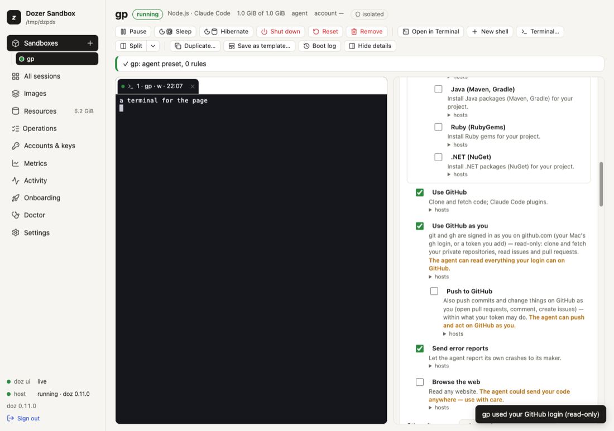

Chapter 18
GitHub as you
An agent on your Mac uses git and gh as you: it clones your private repositories, opens pull requests, comments on issues.
On this page
An agent on your Mac uses git and gh as you: it clones your private repositories, opens pull requests, comments on issues. An agent in a sandbox can do the same — without your token ever entering the sandbox. Dozer's proxy, on your Mac, puts your login into each request on its way to GitHub, the same way it supplies the agent's AI credential.
It's off until you choose it — for every new sandbox (the setup's Access step, or doz access set --github read), or for one sandbox — and read-only until you also allow pushing.
Concepts#
- Use GitHub as you — a permission (in the sandbox's permissions, beside "Use GitHub"). While it's on,
gitandghin the sandbox are signed in to github.com as you. Inside,GH_TOKEN,GITHUB_TOKENand git's login hold only a placeholder (doz_cred_…); the proxy swaps your real token in on the way togithub.com,api.github.com,uploads.github.comandcodeload.github.com— and only there. A placeholder sent anywhere else is refused. - Read-only (the default when it's on): clone, fetch, pull,
gh repo view, reading issues and pull requests. Refused, with a message that says how to allow it:git push, and anything that changes something on GitHub — creating issues or pull requests, comments, edits, deletes, and GraphQL mutations. - Push to GitHub — a second permission under the first: the agent can push and act on GitHub as you, within what your token may do. Every such request is in the sandbox's network log (method and path — never a body, never the token).
- Where your token comes from — the setting
github.credentials:gh(the default): your Mac's ownghlogin, read when it's used (gh auth token) and kept in the proxy's memory for a few minutes — never written anywhere. Signing out ofghon the Mac (gh auth logout) ends it.key: only a token you give — a sandbox's own, else the default one you gave in the Access step (below). A fine-grained token limited to the repositories the agent works on is the safest choice.off: never, even with the permission on.
- Your identity — your
user.nameanduser.emailfrom the Mac's global git config are copied into the sandbox's git config (they're not secrets), so the agent's commits are yours. They're gone when you turn the permission off. ghis installed for you — part of the tools layer: while GitHub as you is on, Dozer copies the GitHub CLI into the sandbox (downloaded once to your Mac, a pinned version whose sha256 is checked; on any base, without the sandbox's network). It is removed when you turn the permission off.
gh in the sandbox#
gh needs no login of its own: it reads GH_TOKEN, the placeholder, and the proxy does the rest.
gh auth status # ✓ Logged in to github.com account you (GH_TOKEN)
gh repo view OWNER/REPO
gh pr list
gh issue view 12 # reads work; creating or commenting needs Push to GitHubIts git protocol is HTTPS (the default), so gh repo clone uses the same login as git. The first start shows tools: gh 2.102.0 — for GitHub as you; doz tools NAME shows it later. If it could not be set up (an offline Mac on the first use), the start goes on without it and the next start or wake tries again — or doz tools NAME --apply.
For every new sandbox: the Access step#
Setup's Access step (Setting up) asks once — Off, Read-only or Read and push, from this Mac's gh login or a token you paste — and confirms it with the real token: one GET https://api.github.com/user through the same proxy leg the sandboxes use.
✓ GitHub as you read (gh login) confirmed — signed in as you — scopes: repo, read:org (from this Mac's gh login)
✓ GitHub as you read (a key) confirmed — signed in as you — it can see 3 repositories (from your key)
✗ GitHub as you push (gh login) not confirmed — this Mac's gh is not logged in to github.com — run gh auth login on the MacA classic token shows its scopes; a fine-grained token has none to show, so you see how many repositories it can see instead. A check that fails says why; Skip keeps your choice (not confirmed), Turn it off turns it off. Again at any time:
doz access # confirm it now (and the Claude account, the SSH agent)
doz access set --github push # new sandboxes: read and push
doz access set --github read --github-key # paste a token (no echo) — github.credentials becomes key
doz access set --remove-github-key
doz access set --github offThe choice is the setting defaults.github: new sandboxes — doz new, create, up, Quick add and New sandbox — get Use GitHub as you (and Push to GitHub for push) switched on. A sandbox can still differ (doz create --github off, its own switches); existing sandboxes don't change. The token you paste is kept in your login keychain as doz-github; a sandbox's own token wins over it.
Turn it on for one sandbox#
In the dashboard: the sandbox's Permissions → Use GitHub as you (and Push to GitHub under it). Each asks first.

From the command line:
doz net allow my-app github:as-you # read-only
doz net allow my-app github:push # also push (turns on github:as-you too)
doz net deny my-app github:push # back to read-only
doz net deny my-app github:as-you # off — every placeholder already issued stops working at once
doz create my-app --github read # from the start: off, read or push (github: in doz_project.yaml)It needs a proxied sandbox (the agent, locked or open network — the default for agent images). A change applies at once to the proxy; a session started before you turned it on gets the placeholder at its next start.
The first time the sandbox uses your login after you turn it on (or change it), your terminal and the dashboard say so: my-app used your GitHub login (read-only).
Use a token instead of your gh login#
doz access set --github-key < token.txt # the default token for every sandbox (keychain: doz-github); sets github.credentials = key
doz key set my-app --github < token.txt # this sandbox's own token (or --keychain SERVICE to read it from the keychain)
doz key rm my-app --githubA sandbox's own token given on stdin is held in the host's memory — give it again after the host restarts, or keep it in the keychain. A sandbox's own token wins over the default one and over gh whatever the setting says (unless it's off).
SSH (optional)#
SSH is encrypted end to end, so the proxy can't put a login into it. Instead, Dozer can forward your Mac's ssh-agent into the sandbox: ssh and git over SSH there can ask your agent to sign, but your keys never leave the Mac. The sandbox may only list your agent's keys and ask for signatures — adding, removing or locking keys is refused before it reaches your agent.
doz config set --sandbox my-app sandbox.ssh_agent on # or doz create --ssh-agent on, ssh_agent: on in doz_project.yaml
doz config set --sandbox my-app sandbox.ssh_agent offWhile it's on, sessions get SSH_AUTH_SOCK, and the network allows github.com:22 — nothing else over SSH. You're told the first time it's used. Your Mac needs a running ssh-agent with a key in it (ssh-add -l on the Mac). For every new sandbox: the Access step, or doz access set --ssh-agent on — it's confirmed by asking your agent for its keys ("the ssh-agent has 2 keys").
The tools layer makes SSH work on any base:
- an ssh client is installed (
openssh-client, withaptorapkthrough the proxy) when the image has none; - github.com's host keys — the ones GitHub publishes, built into Dozer — are written to
/etc/ssh/ssh_known_hosts, so the firstssh -T git@github.comorgit clone git@github.com:…never asks "Are you sure you want to continue connecting?" and never trusts a key it was handed. Both go again when forwarding is turned off (the keys file keeps anything else in it).
ssh -T git@github.com # Hi you! You've successfully authenticated…
git clone git@github.com:OWNER/REPO.gitWhat the agent is told#
One line in its facts — that git and gh are signed in as you, read-only or with push, and to use HTTPS remotes (and SSH, when the agent is forwarded) — and the details in its dozer skill. The line says when gh was installed by Dozer (or, if it could not be, why), and that the ssh client and github.com's host keys are in place.
Troubleshooting#
| symptom | what to do |
|---|---|
git push says "pushing to GitHub is off" | It's read-only: doz net allow NAME github:push (or the switch). |
gh or git says "Bad credentials" / 401 | Is gh logged in on the Mac (gh auth status)? With github.credentials = key, did you doz key set NAME --github? |
| git asks for a username and password | The session started before the permission was on: start a new session. Is the remote HTTPS (https://github.com/…)? |
ssh -T git@github.com fails | Is sandbox.ssh_agent on, and does ssh-add -l on the Mac list a key? |
doz access says GitHub refused the token (401) | The token was revoked or expired: gh auth login again, or paste a new one (doz access set --github-key). |
gh: not found | Is GitHub as you on? doz tools NAME says whether gh was set up and why not; doz tools NAME --apply tries again. |
| A new sandbox didn't get your login | Is defaults.github read or push (doz access)? Naming a network (--network locked) or exact permissions takes exactly those. |
Settings#
| key | default | what it does |
|---|---|---|
defaults.github | off | "GitHub as you" for new sandboxes: off, read or push (the Access step). |
github.credentials | gh | Where your GitHub login comes from: gh, key or off. |
sandbox.ssh_agent | off | Forward your Mac's ssh-agent (github.com:22 only). Per sandbox too. |
See also: The tools layer, What the agent can do, Security model.
Edit this page on GitHub · Chapter 18 of 25